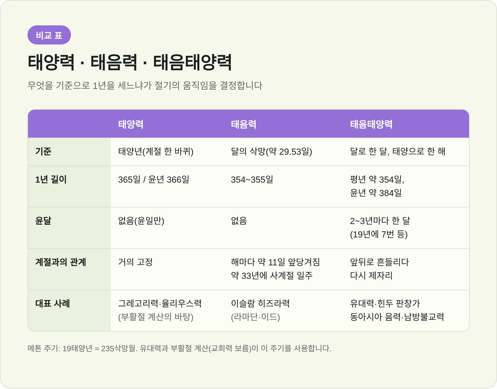
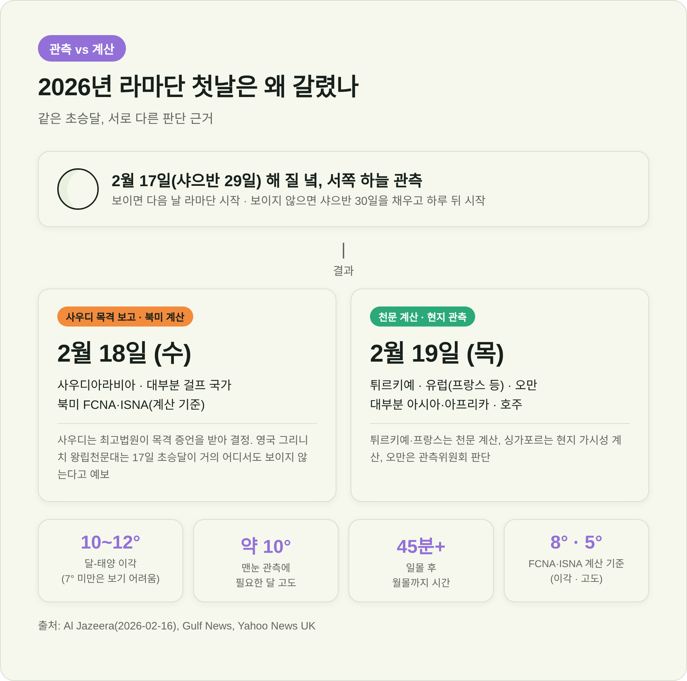
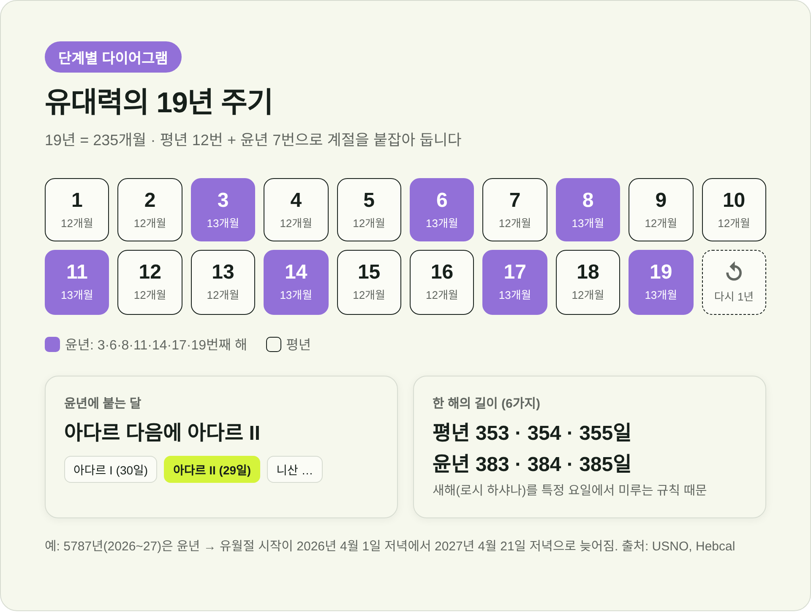
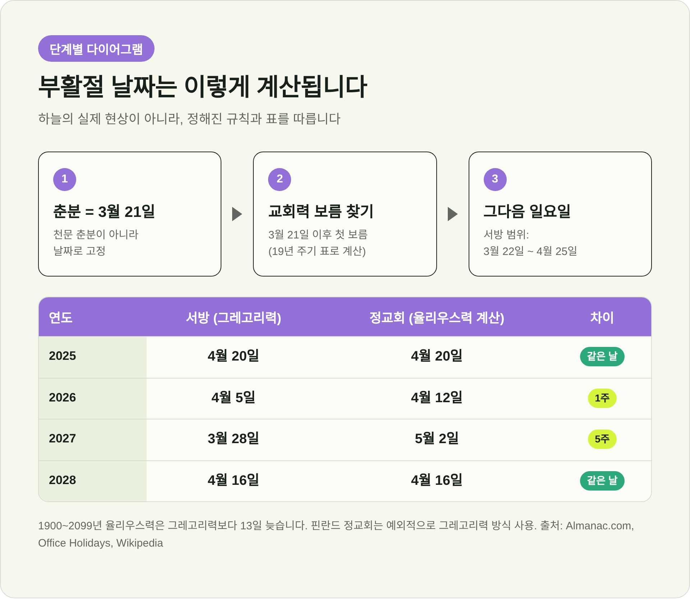
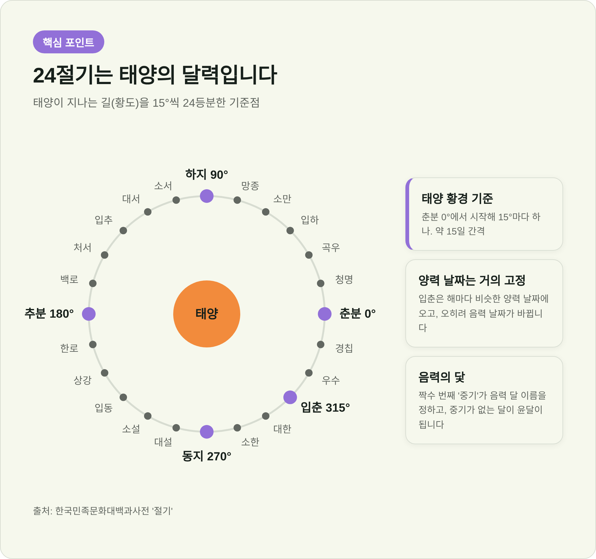
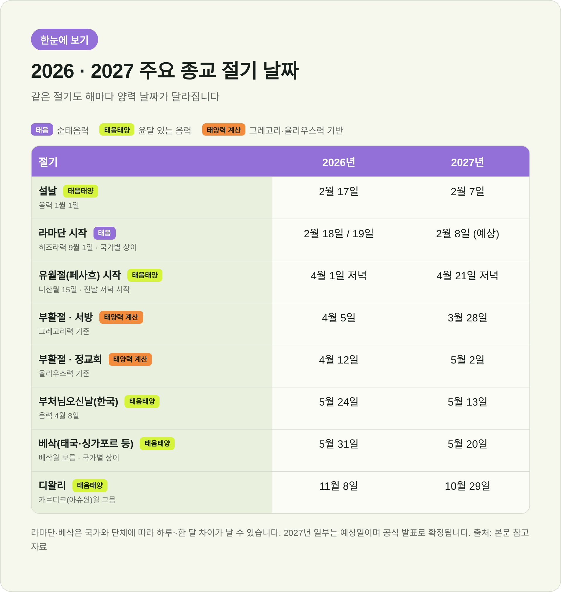

종교 역법 비교 — 부활절·라마단·설날 날짜가 해마다 바뀌는 이유
이번 글에서는 종교 역법을 비교종교학의 눈으로 정리해 보겠습니다. 부활절과 라마단, 설날과 부처님오신날은 왜 해마다 양력 날짜가 바뀌는지, 그 원리를 하나씩 살펴봅니다.
먼저 결론부터 말씀드리겠습니다. 날짜가 움직이는 이유는 대부분 달에 있습니다. 달의 한 주기(약 29.53일)로는 태양의 1년(약 365일)을 깔끔하게 나눌 수 없습니다. 이 어긋남을 어떻게 다루느냐가 전통마다 다르고, 그 차이가 곧 절기의 움직임이 됩니다. 그리고 그 선택 뒤에는 늘 "누가 달력을 정하는가"라는 물음이 놓여 있습니다.
■ 세 가지 시간표: 태양력, 태음력, 태음태양력
달력은 크게 세 가지로 나눌 수 있습니다.
태양력은 계절의 한 바퀴, 즉 태양년을 기준으로 삼습니다. 우리가 쓰는 그레고리력이 대표적입니다. 그 이전의 율리우스력은 1년을 365.25일로 잡았는데, 실제 태양년보다 약 11분 14초가 길었습니다. 작은 차이지만 약 314년마다 하루씩 쌓였습니다. 결국 1582년 교황 그레고리우스 13세가 개력을 단행했습니다. 열흘을 덜어내 춘분을 3월 11일에서 3월 21일로 되돌렸고, 채택국에서는 10월 4일 다음 날이 곧바로 10월 15일이 되었습니다. 영국과 그 식민지는 1752년에야 이를 받아들였습니다.
태음력은 오직 달의 차고 기욺만 셉니다. 열두 달을 모으면 354~355일로, 태양년보다 약 11일 짧습니다. 윤달을 넣지 않으므로 날짜는 계절과 상관없이 해마다 앞당겨집니다.
태음태양력은 둘 사이의 타협입니다. 달로 한 달을 세되, 몇 년에 한 번 윤달을 끼워 넣어 계절에 다시 맞춥니다. 유대력, 힌두 판창가, 동아시아 음력, 남방불교 역법이 여기에 속합니다. 이때 자주 등장하는 숫자가 있습니다. 19태양년이 235삭망월과 거의 같다는 '메톤 주기'입니다.

■ 이슬람 히즈라력: 계절을 거슬러 걷는 라마단
이슬람력은 순수한 태음력입니다. 한 해는 12개월, 354일 또는 355일이고, 각 달은 29일이나 30일입니다. 기원은 무함마드가 메카에서 메디나로 옮겨 간 히즈라입니다. 히즈라력 원년 첫날은 율리우스력 622년 7월 16일에 해당합니다. 이 기원을 공식 연호로 쓰기 시작한 것은 2대 칼리파 우마르 때입니다. 도입 시점은 자료에 따라 638년 또는 639년으로 조금 다르게 전해집니다.
윤달을 넣지 않는 데에는 경전상의 배경이 있습니다. 꾸란 9장 36~37절은 '나시(nasi')'라는 관행을 금합니다. 다만 나시가 신성한 달을 뒤로 미루는 일이었는지, 윤달을 끼워 넣는 일이었는지는 학자들 사이에서도 해석이 나뉩니다.
결과는 분명합니다. 라마단은 해마다 약 10~11일씩 앞당겨집니다. 그래서 약 33년(브리태니커는 약 32.5년으로 적습니다)에 걸쳐 겨울·봄·여름·가을을 한 바퀴 돕니다. 실제로 2026년 라마단은 2월 18일 또는 19일에 시작했고, 2027년에는 2월 8일 시작이 예상됩니다. 같은 금식이라도 어느 세대는 짧은 겨울 낮에, 어느 세대는 긴 여름 낮에 하게 되는 셈입니다.
초승달을 볼 것인가, 계산할 것인가
새 달은 전통적으로 초승달을 눈으로 확인해야 시작됩니다. 2026년의 경우 샤으반월 29일인 2월 17일 해 질 녘에 서쪽 하늘을 살폈습니다. 보이면 이튿날이 라마단 첫날, 보이지 않으면 샤으반을 30일로 채우고 하루 뒤에 시작합니다. 사우디아라비아에서는 목격 증언을 모아 최고법원이 결정합니다.
천문학자들은 가시성을 숫자로 따집니다. 달과 태양 사이 각거리(이각)는 10~12도가 바람직하고, 7도 미만이면 보기 어렵습니다. 맨눈 관측에는 고도 약 10도, 해 지고 달 지기까지 45분 이상이 필요하다고 봅니다. 북미의 FCNA·ISNA는 지구 어딘가에서 해 질 때 이각 8도, 고도 5도 이상이면 된다는 계산 기준을 씁니다.
2026년 결과는 이렇게 갈렸습니다. 사우디와 대부분의 걸프 국가, 북미 단체는 2월 18일에 금식을 시작했습니다. 튀르키예·유럽·대부분의 아시아와 아프리카, 호주는 2월 19일이었습니다. 흥미로운 점은 판단 근거가 엇갈렸다는 것입니다. 영국 그리니치 왕립천문대는 2월 17일 초승달이 사우디를 포함해 거의 어디서도 보이지 않으리라 예보했습니다. 사우디는 목격 보고를 받아들였습니다. 반면 튀르키예와 프랑스는 천문 계산에 따라 2월 19일을 택했습니다.
한쪽은 "직접 본 증언"을, 다른 한쪽은 "검증 가능한 계산"을 신뢰의 근거로 삼습니다. 어느 쪽도 나름의 전통과 논리를 갖고 있습니다. 2016년 이스탄불에서는 약 50개국 대표가 모여 단일 히즈라력에 다수가 동의하기도 했습니다. 그러나 2026년의 모습이 보여 주듯, 실제 시작일은 지금도 나라와 단체마다 다릅니다.

■ 유대력: 19년에 일곱 번 끼우는 열세 번째 달
유대력은 대표적인 태음태양력입니다. 고대에는 초승달 목격으로 달을 시작했지만, 힐렐 2세 시기(359년) 이후로는 공개된 계산 규칙을 따릅니다. 달력이 쓰는 한 달의 길이는 29일 12시간 44분 3⅓초로 정해져 있습니다.
핵심은 19년 주기입니다. 19년 동안 12개월짜리 평년이 12번, 13개월짜리 윤년이 7번 옵니다. 윤년은 주기의 3·6·8·11·14·17·19번째 해이고, 이때 아다르월 뒤에 '아다르 II'가 하나 더 붙습니다. 여기에 새해(로시 하샤나)가 특정 요일에 오지 않도록 미루는 규칙까지 더해집니다. 그래서 평년은 353·354·355일, 윤년은 383·384·385일로 길이가 여섯 가지나 됩니다.
윤달의 효과는 날짜에서 바로 보입니다. 2026년 유월절(페사흐)은 4월 1일 저녁에 시작했습니다. 그런데 유대력 5787년은 아다르 I·II가 있는 윤년입니다. 그 결과 2027년 유월절은 4월 21일 저녁, 약 3주 늦게 시작합니다. 한 달을 통째로 끼워 넣어 봄의 축제를 봄에 붙잡아 두는 방식입니다.

■ 부활절: 춘분, 보름, 그리고 일요일
부활절 규칙은 흔히 한 문장으로 요약됩니다. "3월 21일 또는 그 이후 첫 보름달 다음 일요일." 다만 여기의 춘분과 보름은 하늘의 실제 현상이 아닙니다. 춘분은 3월 21일로 고정되어 있고, 보름도 19년 주기 표로 계산한 '교회력 보름'입니다. 그래서 서방 부활절은 3월 22일에서 4월 25일 사이를 오갑니다.
동방 정교회도 같은 원리를 쓰지만, 계산의 바탕이 율리우스력입니다. 1900~2099년에는 율리우스력이 그레고리력보다 13일 늦습니다. 이 차이가 겹치면서 두 부활절은 자주 갈립니다. 2026년은 서방 4월 5일, 정교회 4월 12일이었습니다. 2027년은 서방 3월 28일, 정교회 5월 2일로 다섯 주 차이가 납니다. 2028년에는 다시 4월 16일로 같아집니다. 예외도 있습니다. 핀란드 정교회는 그레고리력 방식으로 계산합니다.
니케아 공의회는 무엇을 정했을까
"325년 니케아 공의회가 이 공식을 정했다"는 설명이 널리 퍼져 있습니다. 대중적인 해설서나 일부 학자의 글도 그렇게 씁니다. 그러나 학계의 다수 견해는 조금 더 신중합니다.
공의회의 의사록은 남아 있지 않습니다. 현존하는 서신과 후대 기록으로 확인되는 원칙은 두 가지입니다. 부활절 날짜를 유대력 계산에 기대지 않을 것, 그리고 모든 교회가 같은 날 지킬 것. 캠브리지 대학 출판부의 공의회 연구서는 여기에 일요일에 지키고, 음력 14일에 지키던 관행(쿼토데시만)을 따르지 말라는 내용을 덧붙입니다. 반면 구체적 계산법은 명시되지 않았고, 수백 년에 걸쳐 실무로 굳어졌다고 봅니다. 알렉산드리아식 계산이 단계적으로 퍼졌고, 664년 잉글랜드의 휘트비 교회회의도 그 과정의 한 장면입니다.
2025년은 마침 니케아 1700주년이었고, 서방과 동방의 부활절이 같은 날이었습니다. 그해 11월 바르톨로메오스 총대주교와 레오 14세 교황은 공동선언에서 영구적인 공통 날짜를 찾는 노력이 이어지길 바란다고 밝혔습니다. 1997년 세계교회협의회가 실제 천문 관측에 맞춘 계산을 제안한 적도 있지만, 채택한 교회는 없었습니다.

■ 부처님오신날과 베삭: 같은 탄신, 다른 날짜
불교의 탄신 기념일은 한 전통 안에서도 날짜가 다릅니다. 한국·중국·베트남 등 동아시아는 음력 4월 8일을 지킵니다. 일본은 이를 양력 4월 8일로 옮겨 지킵니다. 스리랑카·태국 등 남방불교권은 '베삭'이라 하여 베삭월 보름에 탄생·깨달음·열반을 함께 기립니다. 1950년 세계불교도우의회가 5월 보름을 기념일로 하자고 결의했고, 1999년 유엔 총회도 '베삭의 날'을 공식 인정했습니다.
2026년의 날짜는 이 다양성을 잘 보여 줍니다. 한국의 부처님오신날은 5월 24일이었습니다. 일요일이라 25일이 대체공휴일이 되었습니다. 남방권에서는 미얀마가 4월 30일, 인도·캄보디아·라오스가 5월 1일이었습니다. 태국·싱가포르·말레이시아·인도네시아는 5월 31일이었습니다. 스리랑카는 5월 1일을 '아디 베삭', 곧 덧붙은 베삭 포야로 지내고, 국가 베삭은 5월 말에 치렀습니다. 같은 보름을 기준으로 하면서도 윤달을 어디에 넣느냐에 따라 한 달이 벌어진 것입니다. 2027년 한국의 부처님오신날은 5월 13일입니다.
■ 힌두 판창가와 디왈리: 윤달이 미룬 빛의 축제
힌두 역법인 판창가는 지역마다 변형이 많은 태음태양력입니다. 기본 단위는 '티티'로, 달이 태양에 대해 12도 움직이는 시간입니다. 한 달은 30티티로 이뤄지고, 차오르는 보름과 기우는 보름으로 나뉩니다. 북인도 대부분은 보름에서 달을 시작하고, 남인도 대부분은 그믐에서 시작합니다. 그래서 같은 날을 두고 달 이름이 다르게 불리기도 합니다.
음력 열두 달은 약 354.367일이라, 대략 3년에 한 번 윤달(아디크 마스)이 들어갑니다. 규칙이 흥미롭습니다. 태양이 다음 별자리로 넘어가기 전에 음력 한 달이 끝나 버리면, 그 달을 윤달로 삼습니다. 2026년에는 5월 17일부터 6월 15일까지 자이슈타월이 두 번 이어졌습니다.
디왈리는 남인도식 아슈윈월, 북인도식 카르티크월의 그믐날 열립니다. 2026년 디왈리는 11월 8일로, 윤달 영향으로 비교적 늦었습니다. 2027년에는 10월 29일로 열흘가량 당겨집니다. 반면 상크란티처럼 태양의 별자리 이동을 따르는 절기는 양력 날짜가 거의 고정됩니다.
■ 설날과 24절기: 음력 속의 태양
설날은 음력 1월 1일입니다. 2026년에는 2월 17일, 2027년에는 2월 7일이었습니다. 여기까지는 달의 이야기입니다.
그런데 흔히 "음력 절기"로 오해받는 24절기는 사실 태양의 이야기입니다. 24절기는 태양이 하늘에서 지나는 길(황도)을 15도씩 24등분한 기준점입니다. 춘분이 0도, 입춘이 315도, 동지가 270도입니다. 그래서 입춘은 양력으로 매년 거의 같은 날 오고, 오히려 음력 날짜가 해마다 바뀝니다.
24절기는 음력을 계절에 묶는 닻 역할도 합니다. 짝수 번째 절기인 '중기'가 음력 열두 달의 이름을 정하고, 중기가 들지 않는 달을 윤달로 삼습니다. 동아시아 음력은 달로 날을 세고, 태양으로 해를 맞추는 정교한 장치인 셈입니다.

■ 달력을 정하는 자는 누구인가
역법은 천문학이면서 동시에 권위의 문제입니다.
중국 왕조에서 일식은 하늘의 뜻을 드러내는 징조로 여겨졌습니다. 정확한 역법과 일식 예측은 황제의 정당성과 연결되었습니다. 명나라 공식 역법은 예측 오류가 잦았지만 관료들은 개혁을 막았고, 청나라 초에는 예수회 선교사 아담 샬이 역법 책임자가 되었습니다. 한 연구자는 황실 천문학을 황제의 위상을 떠받치는 의례·정치 도구로 평가합니다.
조선에서도 달력의 교체는 정치적 사건이었습니다. 을미개혁 때 음력 1895년 11월 17일을 양력 1896년 1월 1일로 삼았고, 연호도 '건양'으로 바꿨습니다. 하지만 사람들의 시간은 쉽게 바뀌지 않았습니다. 1986년에도 83.5%가 음력설을 쇠었고, 1989년 '설'이라는 이름으로 공휴일이 복원되었습니다.
예전에는 하늘을 읽는 권한이 왕실과 성직자에게 있었습니다. 지금은 누구나 스마트폰으로 다음 보름을 확인할 수 있습니다. 그런데도 날짜는 여전히 공동체마다 다릅니다. 초승달을 직접 볼 것인가, 옛 달력을 지킬 것인가, 어느 교회의 계산을 따를 것인가. 이 선택은 정확성보다 "우리는 누구이며 무엇을 이어 가는가"에 대한 답에 가깝습니다.

■ 정리: 날짜가 움직이는 세 가지 이유
| 이유 | 원리 | 해당 절기 |
|---|---|---|
| 윤달을 넣지 않는다 | 1년이 약 11일 짧아 계절을 거슬러 이동 | 라마단, 이드 |
| 윤달을 넣는다 | 2~3년마다 한 달 늦어졌다가 다시 당겨짐 | 설날, 유월절, 부처님오신날, 베삭, 디왈리 |
| 서로 다른 기준을 쓴다 | 율리우스력 vs 그레고리력, 관측 vs 계산 | 부활절(서방·정교회), 라마단 시작일 |
한계도 분명히 적어 둡니다. 이 글은 큰 원리를 다뤘을 뿐, 각 전통 내부의 세부 규칙은 훨씬 복잡합니다. 특히 남방불교와 힌두 역법은 지역마다 계산이 달라, 같은 해에도 날짜가 하루 이틀 엇갈릴 수 있습니다. 실제 행사 날짜는 해당 공동체의 공식 발표를 확인하시길 권합니다.
마지막으로 한 가지만 덧붙이겠습니다. 달력은 시간을 재는 도구이기 전에, 함께 기억하기 위한 약속입니다.
"날짜가 움직인다는 것은, 그 날을 지키는 사람들이 여전히 하늘을 올려다본다는 뜻입니다."
다음 보름달을 보게 되신다면, 그 달빛이 지구 어딘가에서 누군가의 축제 날짜를 정하고 있다는 사실을 한 번쯤 떠올려 보셔도 좋겠습니다.
참고자료
- Al Jazeera, "When is Ramadan 2026, and how is the moon sighted?" (2026-02-16) — https://www.aljazeera.com/news/2026/2/16/when-is-ramadan-2026-and-how-is-the-moon-sighted
- Gulf News, "Ramadan 2026: countries officially confirm first day of fasting" — https://gulfnews.com/world/mena/ramadan-2026-countries-officially-confirm-first-day-of-fasting-1.500441939
- Yahoo News UK, "Saudi Arabia declares Ramadan 2026 start date despite 'not visible' moon warning" — https://uk.news.yahoo.com/saudi-arabia-declares-ramadan-2026-163342225.html
- Gulf News, "When is Ramadan 2027?" — https://gulfnews.com/uae/ramadan/when-is-ramadan-2027-the-expected-date-moon-sighting-and-eid-explained-1.500630523
- Wikipedia, "Islamic calendar" — https://en.wikipedia.org/wiki/Islamic_calendar
- Britannica, "Islamic calendar" — https://www.britannica.com/topic/Muslim-calendar
- Daily Sabah, "Islamic scholars agree on a shared lunar calendar for Muslim world" (2016-05-31) — https://www.dailysabah.com/turkey/2016/05/31/islamic-scholars-agree-on-a-shared-lunar-calendar-for-muslim-world
- U.S. Naval Observatory, "The Jewish Calendar" — https://aa.usno.navy.mil/faq/jewish
- Hebcal, "Jewish Holidays 2026-2027 (5787)" — https://www.hebcal.com/holidays/2026-2027
- Wikipedia, "Date of Easter" — https://en.wikipedia.org/wiki/Date_of_Easter
- Wikipedia, "Easter controversy" — https://en.wikipedia.org/wiki/Easter_controversy
- Wikipedia, "First Council of Nicaea" — https://en.wikipedia.org/wiki/First_Council_of_Nicaea
- The Cambridge Companion to the Council of Nicaea, "The Council of Nicaea and the Celebration of the Christian Pasch" — https://www.cambridge.org/core/books/cambridge-companion-to-the-council-of-nicaea/council-of-nicaea-and-the-celebration-of-the-christian-pasch/98DC2D826C0FA4A17DBAD2C92B64ACF5
- Bart Ehrman Blog, "What Was Decided at the Council of Nicaea in 325?" — https://bartehrman.com/?p=13787
- Almanac.com, "When Is Easter?" — https://www.almanac.com/content/when-easter
- Greek City Times, "Joint Declaration of Ecumenical Patriarch Bartholomew and Pope Leo XIV" (2025-11-30) — https://greekcitytimes.com/2025/11/30/joint-declaration-bartholomew-leo-xiv-common-easter-nicaea-2025/
- Britannica, "Ten Days That Vanished: The Switch to the Gregorian Calendar" — https://www.britannica.com/story/ten-days-that-vanished-the-switch-to-the-gregorian-calendar
- Wikipedia, "Vesak" — https://en.wikipedia.org/wiki/Vesak
- Office Holidays, "Wesak Day 2026" — https://www.officeholidays.com/byday/wesak-day
- Calendarific, "Adhi Vesak Poya" — https://calendarific.com/holiday/sri-lanka/adhi-vesak-poya
- 공휴일 정보, "부처님 오신 날" — https://publicholidays.co.kr/ko/buddhas-birthday/
- 공휴일 정보, "설날" — https://publicholidays.co.kr/ko/seollal/
- timeanddate, "Hindu Calendar" — https://www.timeanddate.com/calendar/hindu-calendar.html
- timeanddate, "Hindu Leap Year" — https://www.timeanddate.com/date/hindu-leap-year.html
- India TV News, "Adhik Maas 2026" — https://www.indiatvnews.com/lifestyle/spirituality/adhik-maas-2026-dates-significance-dos-donts-2026-04-12-1037229
- Drik Panchang, "Diwali" — https://www.drikpanchang.com/hindu-festivals/diwali/diwali.html
- 한국민족문화대백과사전, "절기" — https://encykorea.aks.ac.kr/Article/E0049791
- 서울신문, "명성황후 시해 후 을미개혁으로 태양력 사용" (2016-01-14) — https://seoul.co.kr/news/society/2016/01/14/20160114800188
- JSTOR Daily, "Dragon Swallows the Sun: Predicting Eclipses in China" — https://daily.jstor.org/dragon-swallows-the-sun-predicting-eclipses-in-china